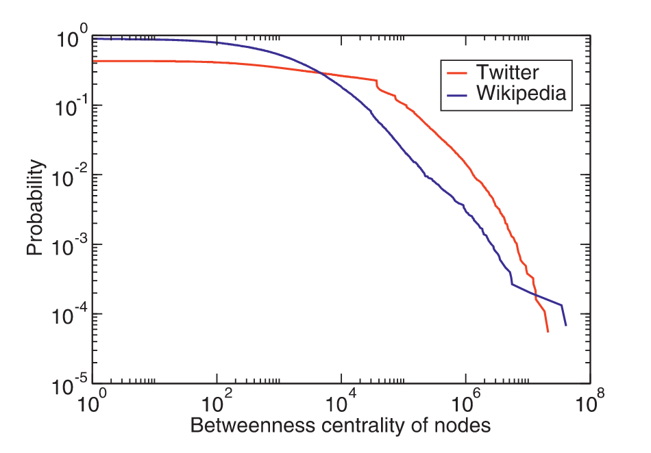

2 Describing networks, then what?
How do we describe networks in meaningful ways?
Q: Give me your best centrality measure?
A: 🤷♂️
Q: There is no better centrality measure??
A: 🤷♂️🤷♂️🤷♂️Seriously, where do we start when we want to understand our networks of interests?
In many ways, network analysis is similar to statistical analysis (sorry). It is statistics.
Usually, in a typical class, we first introduce the language of networks (nodes, edges, directed, weighted, etc.), then network properties. The problem is that we need to avoid what i call the “pitfall of itemizing” (ok, this is a GPT4’s suggestion). Lets try different paths
Here this is a list, as presented by Menczer, Fortunato, and Davis (2020) (I indicate with 🇨 the properties that are used to measure centrality):
- density/sparsity
- degree
- in/out-degree
- weighted; in/out-strength
- assortativity/homophily
- degree assortativity
- disassortative/core-periphery
- paths
- shortest path 🇨 A. breadth-first search A. depth-first search
- diameter
- average path length
- components
- connected components
- giant component
- weakly/strongly connected components
- clustering coefficient/triadic closures
- closeness 🇨
- k-core decomposition
scales
- local: about a single item (node, edge)
- meso: about a group of items
- global: about the whole
types
- connectivity: related to (directly or not) to the number of contacts of “things”
- position: related to position (relative, absolute)
- motif: countrs or frequency of patterns of connection
Misc - hubs
p.s. we can turn local into global by using summaries of the distribution of local properties.
- density
\[d = L / L_{\max} = \frac{L}{\frac{N(N-1)}{2}} = \frac{2L}{N(N-1)}\]
where \(L_{\max} = {N \choose 2} = N(N-1)/2\) for undirected networks. A easy way to remember that is by seeing that \(2L\) is really counting the number of edges
Note
What is a dense network? Why do we care? It often help to think in the extremes, like if \(d=1\) it means that everybody is connected to everybody. If i tell you that coauthorship as much as high-school friendship networks, what does this tells you.
\({N \choose 2}\)
A little extravangaza about \({N \choose 2}\), for those who never took discrete math. Get used to \({N \choose 2}\), but don’t reify it. \({N \choose 2}\) said N choose 2 pops u eveyrtime we need to count the total number of ways unordered sets can happen…
\({N \choose 2}\) works well because we are in a pairwise land (a bit like flatland? Am i right).
degree
paths
- shortest path (betweenness)
\[b_i = \sum_{h\neq j\neq i} \frac{\sigma_{hj}(i)}{\sigma_{hj}}\]
where \(\sigma_{hj}\) is the total number of messages from \(h\) to \(j\) and while \(\sigma_{hj}(i)\) are messages from \(h\) to \(j\) that go through node \(i\).
Tip
In networkX, they give the possibility to include the endpoints in the shortest path counts. Why?
Another important calculation when it comes to this kind of approaches is to know how it’ll behave when you scale up your system. What is the maximum number of ways shortest paths could go through relevant nodes \(i\). In the book, they write: \({(N-1)\choose 2}=\frac{(N-1)(N-2)}{2}\). Do you get why?
Final easter egg, it is worth pointing out that betweenness is old (Freeman (1977)). It was understood in terms of information flow in sociology. In this context, what if we wanted to generalize betweenness to higher-order networks. For instance, do messages going through a clique of best friends is any different than going through one of the bffs? We don’t need to assume that everything is pairwise, as in the original formulation.
- clustering coefficient
\[C(i) =\frac{2\tau(i)}{k_i(k_i-1)}\]
where \(\tau_i\) is the number of triangles involving \(i\).
Warning
Do you think that clustering coefficient has a different flavor than closeness and betweenness? Think about it for a second.
- closeness: \[g_i = \frac{1}{\sum_{j\neq i} \ell_{ij}}\]
Note
In networkX, they write it such that:
\[C(u) = \frac{n - 1}{\sum_{v=1}^{n-1} d(v, u)},\]
Can you think how and why you would prefer that over the other one?
Focusing on metrics as distributions (have you heard of our lord and savior, the log-log plot), turning local into global:
A good first step is to remember your good ol’ summary statistics. Given a vector of single things \(\vec{x} = [x_1, x_2, ..., x_n]\), we can summarize with moments:
\[\langle x \rangle = \frac{1}{n} \sum_{u=1}^n x_i\]
\[\langle x^2 \rangle = \frac{1}{n} \sum_{u=1}^n x_i^2\]
then, we can find the variance doing \(\langle x^2 \rangle - \langle x \rangle\). For instance, going back to degrees, we can find the average of the squares of the degrees degree by taking \(\frac{k_1^2 + k_2^2 + ... k_{N-1}^2 + k_N^2}{N}\). Doing this kind of math is interesting because we can then construct quantities of interests of a network’s degree distribution, such as:
\[\kappa = \frac{\langle k^2 \rangle}{\langle k \rangle^2}\]
When the average squared degree than the sqaure of the average degree, meaning that \(\kappa \gg 1\), you know that you have a heavy-tailed distribution hiding somewhere.
Because i find stats confusing, here is another example of how to use averages to say something about networks. The average path length is given by:
\[\langle \ell \rangle = \frac{\sum_{i,j} \ell_{ij}}{{N \choose 2}} = \frac{2 \sum_{i,j} \ell_{ij}}{N(N-1)}\]
where \(\ell_{ij}\) is shortest-path counts between nodes \(i\) and \(j\), and \(N\) is the number of nodes.
What if we wanted to write a library in, say, Javascript to implement these properties? How would you got about it? We can start by looking at networkX ways of doing things. Here’s degree centrality:
Degree centrality
easy-peasy code, if you have a Graph class object with degree() as method.
But what is this Graph object, lets find out in the doc:
Understanding through counterfactuals…
Some properties are relevant to us because they predict network functionality, e.g.
- connect components x robustness